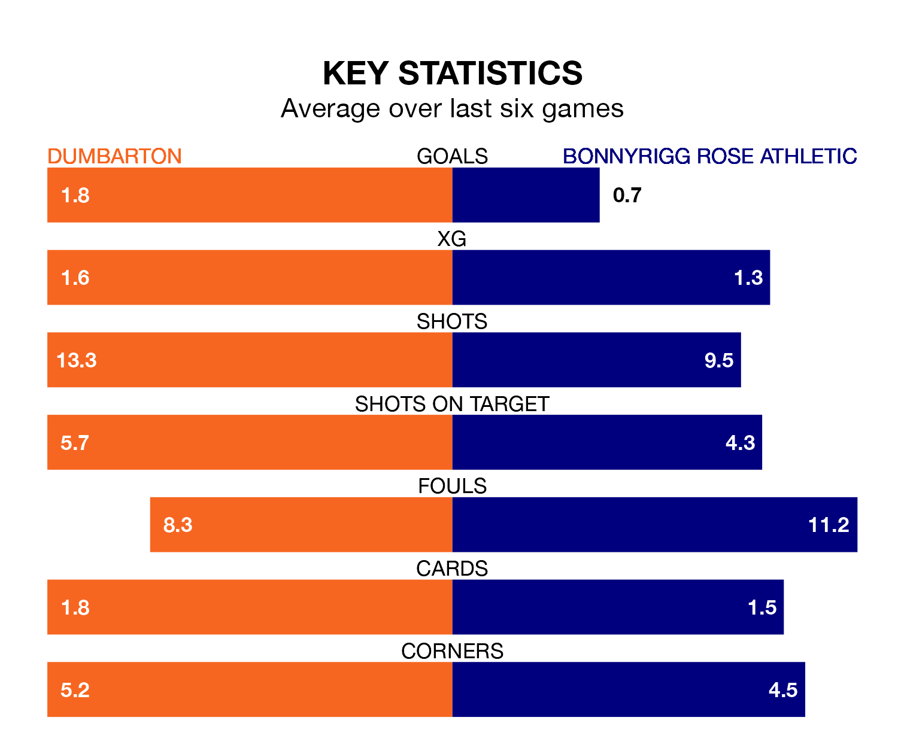

Relegation candidates Bonnyrigg Rose Athletic face a challenge away against high-flying Dumbarton at the moreroom.com Stadium on Saturday.
Bonnyrigg Rose Athletic are eighth in the League Two table, and have picked up seven wins and nine draws in their 29 games to date.
The Sons, meanwhile, are third in the standings with 45 points, having won 13 and drawn six, and are 17 points behind table-toppers Stenhousemuir.
With 48 goals in 29 games so far this season, Dumbarton are the league's highest scorers with 1.7 goals per game. But they are conceding more than average too, letting in 40 goals at a rate of 1.4 per game.
Bonnyrigg Rose, meanwhile, are below average scorers, with 1.2 goals per game, compared to a league average of 1.3. They have conceded 1.4 goals per game.
The Sons are in mixed form in League Two, with three wins and three losses from their last six games.
With no wins and two draws over that period, Athletic's form is much worse – they have taken two points from 18, compared to the home side's nine.
In the last 10 years, Dumbarton and Bonnyrigg Rose have played each other on eight occasions. Dumbarton won four of them and they drew four times.
On average, the Sons scored 1.4 goals and Bonnyrigg Rose 0.4 in those matches.
Their last meeting was on January 13, when they played out a 1-1 draw.
In Neil Martyniuk, the visitors have one of the league's sharpest shooters so far this season. He has notched 10 goals in 27 appearances, to sit fourth in the scoring charts.
His goal rate of one every 237 minutes is slightly quicker than that of Tony Wallace, Dumbarton's top scorer with a goal every 203 minutes, and a total of nine goals in 29 games.
Dumbarton's last match was on March 16, a 6-2 win against Spartans, with Ryan Blair (two), Aron Lynas, Gallagher Lennon, James Graham and Michael Ruth getting the goals for the Sons.
Bonnyrigg Rose lost 2-1 against Clyde last time out, also on March 16, with Smart Osadolor on the scoresheet.
Saturday's match will be refereed by Gavin Duncan, who has taken charge of two League Two games so far this season, issuing one red card and booking four players. He has awarded one penalty.
The last Bonnyrigg Rose game Duncan refereed was the 2-1 win away at Forfar Athletic on August 26. He is yet to oversee a match featuring Dumbarton this season.
Updated: 10:19 (UTC), 22/03/24